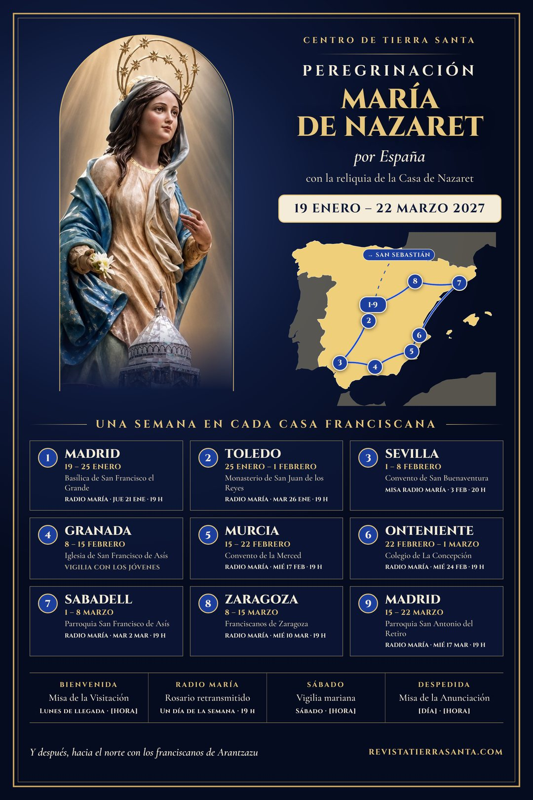
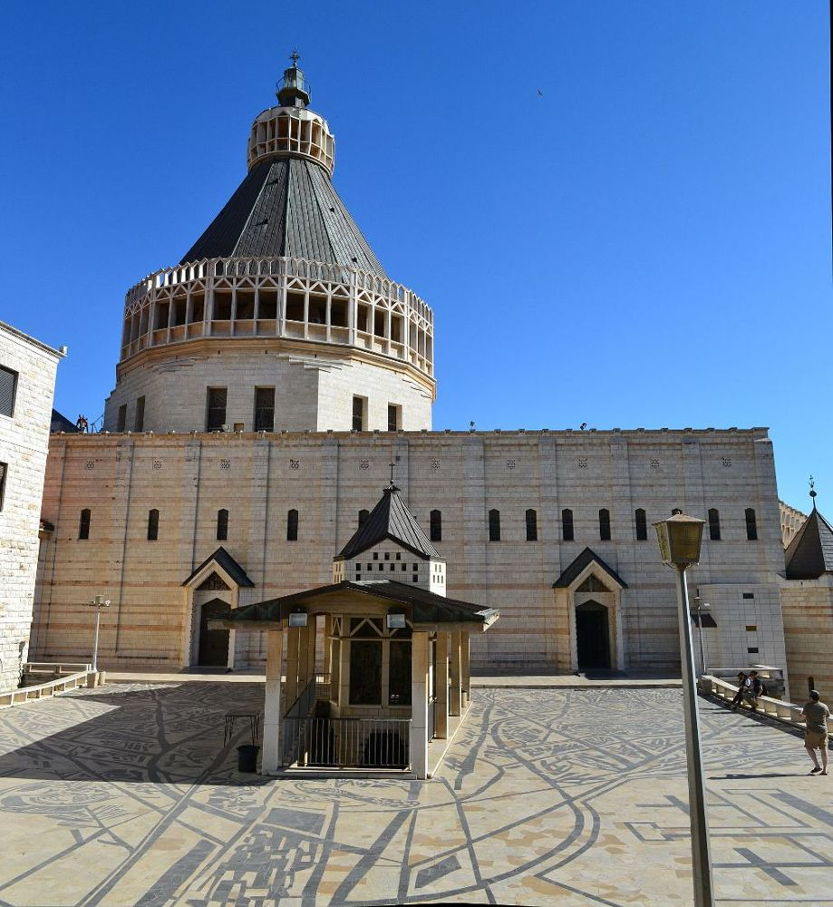
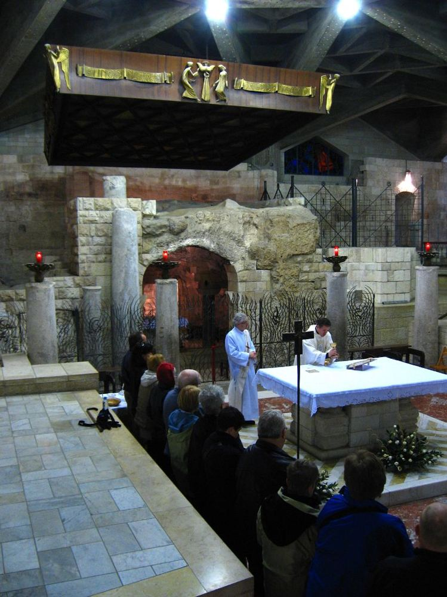

La 2 · domingo 27 de diciembre · 11 h
«Últimas preguntas»
Entrevista a María Díaz-Ripoll y fr. Luis Quintana, el día de la Sagrada Familia.
La imagen peregrina y la reliquia de la Casa de Nazaret recorren España.



Bajo la Basílica de la Anunciación se conserva la casa donde vivió María. Allí el ángel le anunció que sería la Madre del Hijo de Dios, y allí dijo «sí».
Al sexto mes, el ángel Gabriel fue enviado por Dios a una ciudad de Galilea llamada Nazaret, a una virgen desposada con un hombre llamado José, de la casa de David; el nombre de la virgen era María. El ángel, entrando en su presencia, dijo: «Alégrate, llena de gracia, el Señor está contigo». […] María contestó: «He aquí la esclava del Señor; hágase en mí según tu palabra». Lc 1,26-28.38
Cada casa franciscana la acoge durante una semana entera, y se puede ir a rezar ante ella todos los días. Dentro de cada semana hay actos señalados:
«Ave María de Nazaret». Se canta cada día ante la imagen. Pulsa «Himno», arriba, para escucharlo mientras recorres la página.
Dios te salve, compasiva,
Dios te salve, gentil,
Dios te salve, dulce, oh María,
Dios te salve, llena de gracia, oh María.


Entrevista a María Díaz-Ripoll y fr. Luis Quintana, el día de la Sagrada Familia.
La historia de la imagen, la reliquia y el sentido del recorrido, en el número de enero y febrero.